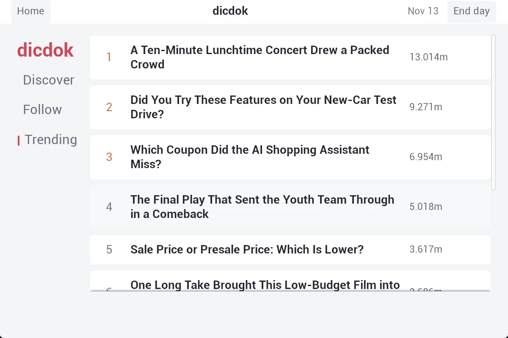

从推进清单，到自主探索
发现的问题
早期版本用阅读与评论条件驱动章节，容易把表达主题的选择变成过关任务。
做出的调整
R6 改为自由结束当天，并区分未查看、看过未公开、调查与实际公开。主题由选择的后果表达。
01 / 玩家体验
六章、18 个游戏日。主动调查、自愿发言，也可以保持沉默；世界仍会继续变化。
02 / 设计重点
玩家电脑、受害者手机、传播者电脑、旁观者手机和平板，各自保存公共动态与私人材料。切换设备不只是换 UI，而是重新理解同一件事中的信息边界。
六章各含三个游戏日，不用读完指定帖子或发够评论才允许推进。调查、公开材料和保持沉默分别被记录，让玩家的选择有区别，而非把阅读变成任务清单。
系统记录句义、指向对象和公开材料的范围，区分正当批评与骚扰。旧发言通过后续报道、聊天和草稿继续发酵，不倒改已经发生的过去。
推荐流只提供入口，部分旧帖需要发现关键词后主动检索。调查板支持选卡、连线与取消关联；私人历史不会因为切换设备就自动变成公共信息。
03 / 项目画面

04 / 真实迭代
发现的问题
早期版本用阅读与评论条件驱动章节，容易把表达主题的选择变成过关任务。
做出的调整
R6 改为自由结束当天，并区分未查看、看过未公开、调查与实际公开。主题由选择的后果表达。
发现的问题
激烈发言总收到理性劝阻，削弱了群体压力，也暴露了作者的立场。
做出的调整
按帖子手写反馈，整体约九成随当时信息站队、一成提出质疑，让评论区具有处境和偏向。
05 / 当前版本
目前以 Windows 开发测试版本展示，重点是六章内容、自由调查与多设备体验。页面图片分别标注实机视口与原生界面渲染。